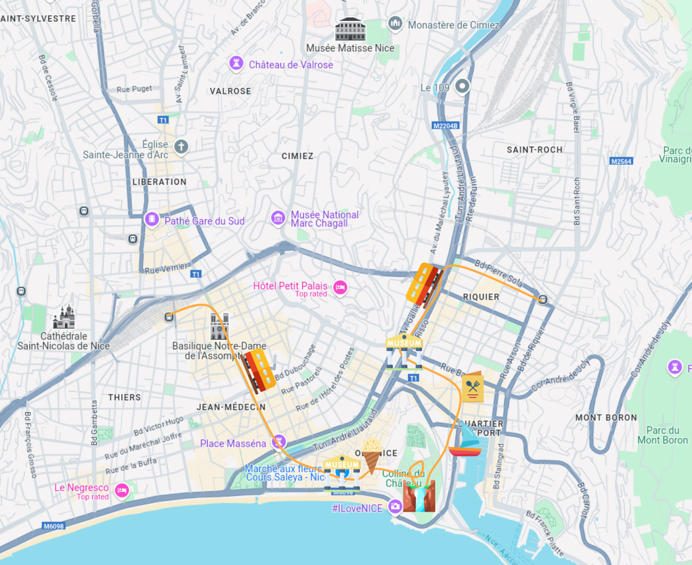
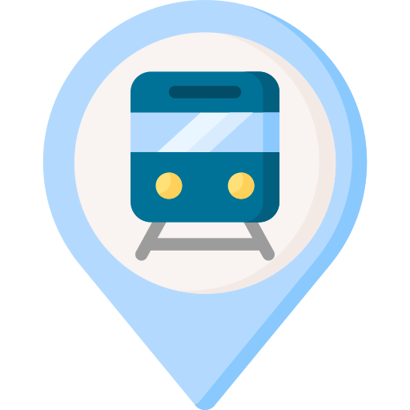
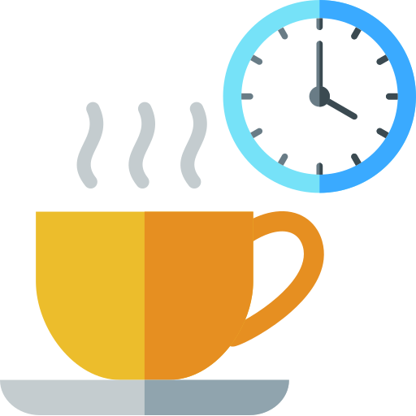
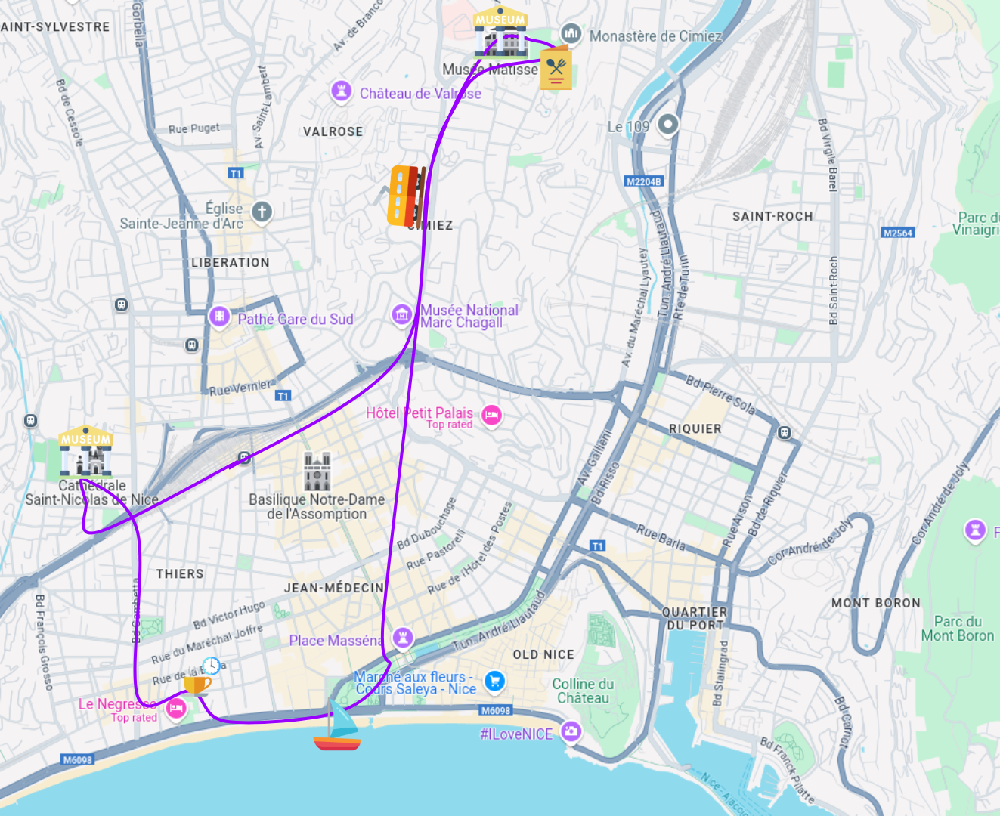
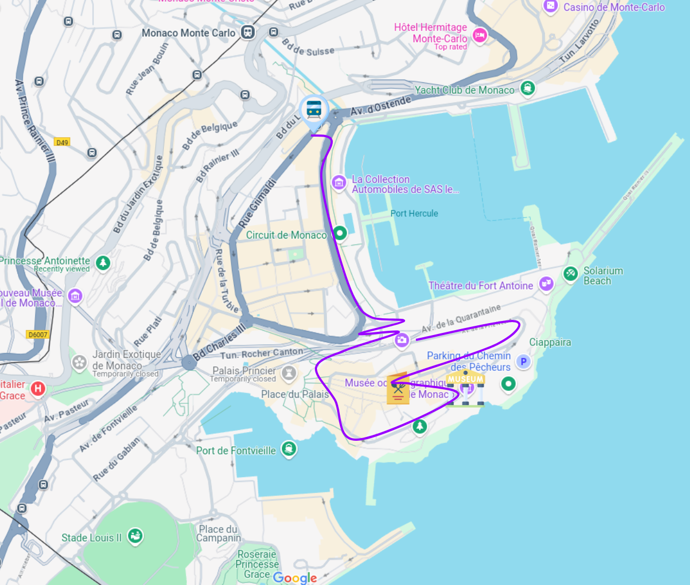
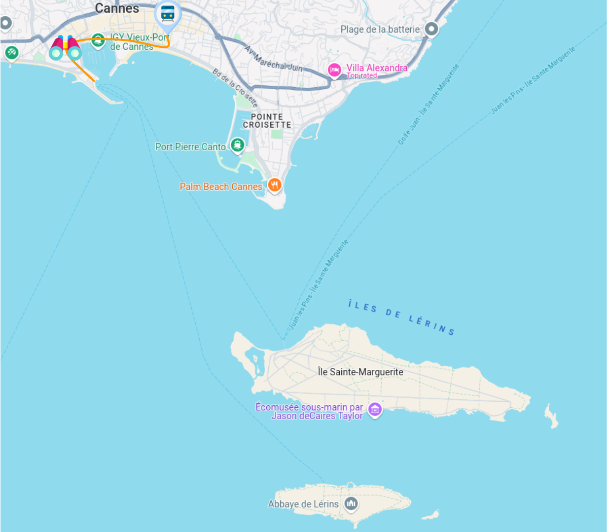

Côte d'Azur
De Cannes à Menton : petites sélections des endroits à visiter sur la Côte !
- La commune libre du safranier - Une village typique de la région en plein coeur d'Antibes. Pleins de bougainvilliers et de figuier de barbarie.
- L'esterel - Pour les amateurs de randonnée. Accessible depuis la gare de Théoule
- La fondation Maeght - Quand vous avez la chance d'avoir une voiture
- La roseraie de Cimiez - Sur les hauteurs de Nice, vue sur l'est de la ville et sur la mer
- La colline du château - Vue sur la mer, le port, la vieille Ville... de quoi profiter de Nice dans sa globalité
- Le rocher de Monaco
socca - pissaladière - Pan Bagnat - glaces
Et quelques adresses
- Chez Pipo, Nice
Pour goûter toutes les spécialités niçoises - La merandela, Nice
Pour goûter les spécialités provençales
- Canet, Nice A ne pas confondre avec la ville du Cannet. Meilleure patisserie de Nice. Dans le carré d'or.
- Café Sauvage, Cannes - Superbe cookies cacahuète. Parfait pour attendre son train à Cannes
- Lilian Bonnefoy, Antibes - Meilleire pâtisserie d'Antibes
Y accéder
Le mieux : avoir une voiture pour aller dans les meilleurs coins
Journée - Nice Est
 Depuis la gare de Riquier
Aller vers la patinoire et remonter vers la place Garibaldi. Là vous pouvez soit prendre le tram soit marcher à pied.
Aller faire un tour au Mamac.
Aller manger chez Pipo. Une pissaladière et ue socca double avec des tartinades à partager pour se laisser là place de goûter à leur tiramisu ou de tester la tourte de blettes !
Depuis chez Pipo, aller sur le port observer les bateaux.
Remonter depuis le port vers le château.
Profiter de la cascade en été pour se rafraichir un peu et observer la vieille Ville.
Aller manger une glace chez Fenocchio.
Trainer un peu dans la Vieille ville et notamment devant le palais de justice et l'opéra.
Si vous avez le temps, je vous conseille le musée de la Photographie sur le cours Saleya.
Prendre le tram jusqu'à la gare de Nice Ville
Journée - Nice en haut et Nice en bas
 Depuis la gare de Nice Ville (ou encore mieux en voiture)
en bus → remonter jusqu'aux Arènes de Cimiez
Prendre le temps de visiter le musée Matisse et les Bains romains
Faire un saut par la roseraie du monastère et profiter de la vue sur la vallée
Très joli coin pour prendre un pic nic (un Pan Bagnat par exemple) sous les oliviers
Redescendre en bus ou à pied par les quartiers residentiels jusqu'à la coulée verte.
Prendre un dessert à Canet.
Se balader sur la promenade des anglais jusqu'à l'avenue Gambetta
Remonter l'avenue jusqu'à la Cathédrale Russe
Retourner vers la gare de Nice Ville
Journée - Monaco et vers la frontière Italienne
Depuis la gare de Monaco
Longer le port de Monaco s'il n'y a pas de rallye.
Reprendre son souffle pour monter sur le rocher.
Profiter de la vue depuis le palais princier. (Vous pourrez peut être apercevoir une princesse, le palais est habité).
Longer la mer jusqu'au musée Océanographique qu'il vaut la peine de visiter
Aller manger en ville sur le rocher ou rue Princesse Caroline
Reprendre le train jusqu'à Menton pour les amateurs de musées ou jusqu'à Roquebrune pour une petite balade au bord de la mer ou monter vers les jardins monegasques pour une journée plus légère.
A Grasse
Aller visiter le musée Cocteau.
Se balader dans la vieille ville (vers la basilique).
Déambuler pour trouver les marchant citrons.
A Roquebrune
Depuis la gare de Carnolès : descendre vers la plage et longer la mer jusqu'à la pointe du crabé.
A Monaco
Les accès dans Monaco sont très peu pensés pour les piétons
Aller vers le jardin exotique puis vers le jardin Princesse Antoinette pour la fin de journée.
Reprendre le train à la gare de Roquebrune/Grasse ou Monaco
Journée - Cannes et les Îles
Depuis la gare de Cannes
Descendre à travers des rues commerçante jusqu'à la croisette.
Longer la croisette vers le palais des festival et remonter vers le Suquet
Profiter de la vue depuis le Suqet.
Prévoir un sandwich ou un pic nic avant d'aller prendre le bateau sur le port
Pique-Niquer sur les îles
Faire le tour des îles et profiter de la mer
Reprendre le bateau et retourner à la gare